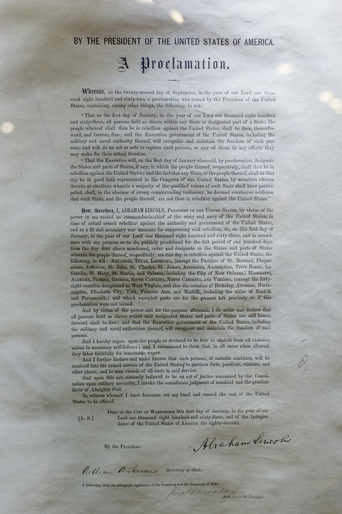
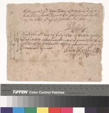
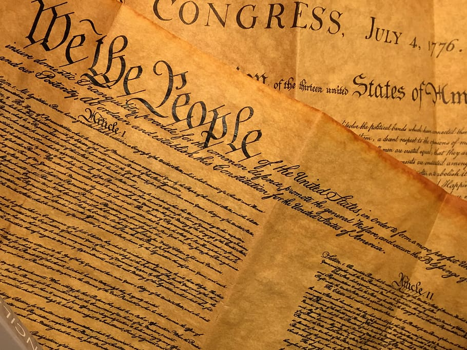

| Event | Description | my view |
|---|---|---|
1. Black Codes |
The Black Codes were laws created be the Southern states shortly after rejoining the Union. These laws limited the rights and freedoms of the newly freed slaves. | I think the Black Codes were immoral and unfair. |
2. Thirteenth Amendment  |
The Thirteenth Amendment abolished slavery, exept as a punishment for crime. | I think the Thirteenth Amendment was the largest step in making the United States what is currently is. |
3. Fourteenth Amendment  |
The Fourteenth Amendment made everyone born in this country a citizen, and stated that no one could be punished without having broken the law. | I think the Fourteenth Amandment further eradicated slavery by disabling peoples' ability to punish other people with slavery without them having commited a crime. |
4. Fifteenth Amendment |
The Fifteenth Amendment made all citizens able to vote. | I think the Fifteenth Amendment is great because it allows all people to be represented. |
5. Lincoln's ten perrcent plan  |
The Ten-percent plan allowed states to join the union if at least 10 percent of their population became U.S. citizens. | I think the Ten-percent Plan was necessary for new states to be effective in electing national leaders. |